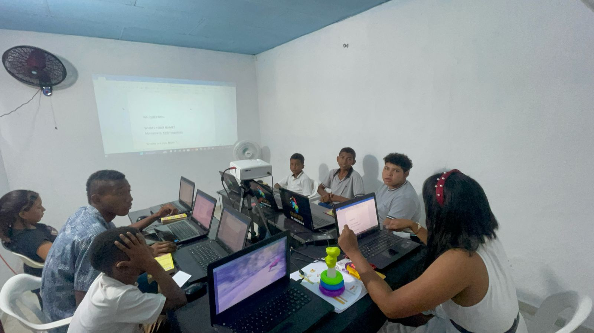

Nuestros Programas Especializados
- Programa de Sistemas Avanzados -Este curso de sistemas informáticos proporciona los conocimientos esenciales para el correcto mantenimiento y manejo de equipos de computación, abarcando desde la configuración básica del hardware y software hasta prácticas avanzadas de optimización y seguridad. Los participantes aprenderán a realizar limpieza física de componentes, diagnosticar fallas comunes, gestionar sistemas operativos, instalar programas y aplicar medidas de protección contra malware. Además, se incluyen técnicas para el manejo eficiente de archivos, respaldo de datos y actualizaciones del sistema, garantizando un uso prolongado y óptimo de los recursos tecnológicos en entornos personales y profesionales.
- Programa de Belleza Integral - Este curso de belleza integral ofrece una formación completa en las técnicas más demandadas del sector estético, incluyendo manicura y pedicura (con esmaltado tradicional, semipermanente y acrílico), diseño de cejas (perfilado, henna y microblading), extensión de pestañas punto a punto (clásicas, híbridas y volumen ruso), y maquillaje profesional (social, artístico y de novias). Además, abarca tratamientos capilares como cortes, coloración, alisados, extensiones y peinados para eventos especiales. Con metodología práctica, los estudiantes dominarán el uso de herramientas, productos de calidad y protocolos de higiene, preparándose para destacar en salones de belleza o emprendimientos propios.
- Programa de Diseño Grafico
- Este curso de diseño gráfico especializado te capacitará en la creación de artes para estampados textiles (camisetas, hoodies), personalización de productos (mugs, llaveros) y diseño de pendones publicitarios, utilizando herramientas profesionales como Adobe Illustrator. Aprenderás técnicas vectoriales avanzadas, preparación de archivos para sublimación, serigrafía y plotter de corte, manejo de colores Pantone, así como tips para emprendimientos de merchandising. Incluye módulos de composición visual, branding aplicado y buenas prácticas de impresión para garantizar resultados de alta calidad en tus proyectos.
- Programa de Camara y Dron
- Este curso integral te preparará en el manejo profesional de cámaras réflex y mirrorless, dominando ajustes de exposición, enfoque, composición y técnicas de iluminación para fotografía y video. Aprenderás edición avanzada en Photoshop (retoque, corrección de color y montajes creativos) y herramientas esenciales para posproducción audiovisual. Además, incluye certificación en pilotaje de drones: desde normativa y seguridad hasta maniobras avanzadas, captura aérea en 4K y procesamiento de imágenes con software especializado. Ideal para proyectos audiovisuales, fotoperiodismo, publicidad o emprendimientos.
- Programa de Operador de Maquinaria Pesada
- Este curso integral capacita en la operación profesional y mantenimiento básico de maquinaria pesada esencial para la construcción e industria, incluyendo: Retroexcavadora (carga, excavación y nivelación), Excavadora (movimientos de tierra y manejo de materiales), Camión Volquete (Doble Troqué) (carga, transporte y descarga de materiales), Minicargador (operaciones en espacios reducidos), Motoniveladora (perfilado de terrenos) y Bulldozer (desmonte y empuje de grandes volúmenes). El programa combina formación teórica (normativas de seguridad, interpretación de planos y estabilidad de cargas) con práctica real en campo, preparando a los estudiantes para certificaciones laborales y desafíos en obras civiles, mineras y proyectos de infraestructura.
- Programa de Ingles Conversacional

- Este curso dinámico está diseñado para desarrollar habilidades de comunicación en inglés desde cero, cubriendo los niveles A1 (básico) y A2 (preintermedio) del Marco Común Europeo. Mediante un método 100% conversacional con apoyo de recursos audiovisuales avanzados (videos interactivos, podcasts temáticos y simulaciones de realidad virtual), los estudiantes aprenderán a: saludar, describir personas y lugares, hacer compras, hablar de rutinas y planes futuros, con gramática contextualizada. Incluye talleres de pronunciación con IA, role-plays en situaciones cotidianas (viajes, restaurantes, trabajo) y feedback personalizado para ganar fluidez rápidamente. Ideal para quienes necesitan bases sólidas con enfoque en hablar y entender el idioma en contextos reales.